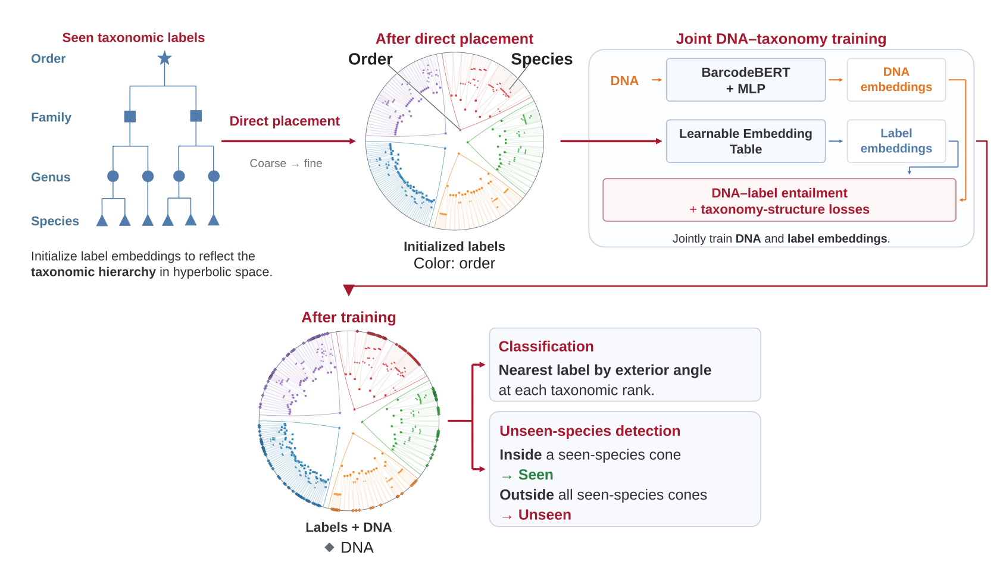

Hierarchical Embedding of DNA Barcode Taxonomy with Hyperbolic Entailment Cones
Abstract
DNA barcodes are widely used to assign specimens to taxa, but existing barcode encoders learn embeddings that do not reflect the taxonomic hierarchy. We embed taxonomic labels and DNA barcodes in a shared hyperbolic space in which each taxon's entailment cone lies inside its parent's cone and does not overlap its siblings' cones. Unlike existing modality alignment techniques such as multimodal contrastive learning, our method can be deployed on barcodes of species not seen during training without the need for a labelled reference library of exemplar samples. Samples are detected as unseen if they lie outside all learnt species cones (84.62% recall), whilst also classifying them at genus level (73.09% accuracy) and higher ranks via nearest-label retrieval.
Method

Training in 2D
A separate 2D experiment on a BIOSCAN-5M subset: 5 orders, 575 labels and 216 training DNA probes. This is not a projection of the 768-dimensional model.
Acknowledgements
This work was supported by the Government of Canada’s New Frontiers in Research Fund (NFRF) [NFRFT-2020-00073] and the Canada CIFAR AI Chairs Program.
Cette recherche a été financée par le fonds Nouvelles frontières en recherche du gouvernement du Canada [NFRFT-2020-00073] et le Programme des chaires en IA Canada-CIFAR.